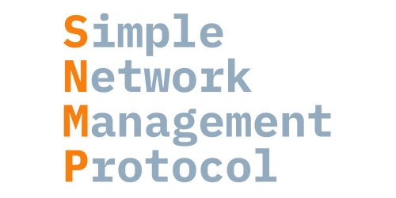

SNMP
"Simple Network Management Protocol is an Internet Standard protocol for collecting and organizing information about managed devices on IP networks and for modifying that information to change device behavior." - wikipedia
Features
InfraSonar supports retrieving data from remote assets using the SNMPv1, SNMPv2c, and SNMPv3 protocol.
Deployment
The SNMP probe can easily be deployed using our appliance manager.
Prerequisites
To monitor an asset using SNMP there ar two things two setup on the monitored asset:
- Access
-
Most SNMP implementation require you to add the monitoring IP as an authorized host. In our appliance based setup this is usually the IP address used by the monitoring appliance.
When you deploy multiple appliances be aware to configure all IP addresses on the SNMP monitored assets.
Also note Adding a host requires access to SNMP (udp/161) from the InfraSonar appliance running the SNMP probe.
- Authentication
-
SNMPv1 and SNMPv2c versions "plain" community string for authentication; SNMPv3 is more secure but not supported on all devices.
The community string or credentials should be stored on the appliance as described here.
default configuration
When no configuration file is specified the probe falls back SNMPv2c and used the community string
public.
How to configure SNMP
The SNMP probe requires SNMP to be configured on devices you wish to monitor. The next chapter describes how to configure SNMP on some standard devices.
FreeBSD
Edit (as root) the file /etc/snmpd.config, find the following lines in the file:
location := "Room 200"
contact := "sysmeister@example.com"
read := "public"
write := "geheim"
trap := "mytrap"
Set location to the correct location for this device and set contact to the system administrator contact.
Set the desired community name, in this example we use public
read := "public"
Enable bsnmpd in /etc/rc.conf
Add this at the end of the file:
bsnmpd_enable="YES"
Start snmpd:
service bsnmpd start
We recommend to unstall the bsnmp-ucd package for more complete monitoring.
Installing this package involves the following steps:
pkg_add -r bsnmp-ucd
Locate and uncomment the line in /etc/snmpd.config
begemotSnmpdModulePath."hostres" = "/usr/lib/snmp_hostres.so"
begemotSnmpdModulePath."ucd" = "/usr/local/lib/snmp_ucd.so"
When done restart the bsnmp daemon:
/etc/rc.d/bsnmpd restart
MacOS
These steps don’t require a system restart and are non-service affecting.
- Open a new terminal window.
- Create a backup of the default SNMP configuration file:
sudo mv /etc/snmp/snmpd.conf /etc/snmp/snmpd.conf.orig - Create and edit a new SNMP configuration file using nano or vi
Enter the following in the new configuration file:
com2sec mynetwork <NETWORK/CIDR> public rocommunity public default .1 - Replace
<NETWORK/CIDR>with the network address and CIDR mask of the subnet your SNMP collector resides on, usually this is the monitoring appliance. -
Replace the community string “public” with another string if that’s your preference.
-
Enable the SNMP daemon:
Note: If you later change the SNMP settings on your Mac, you’ll need tosudo launchctl load -w /System/Library/LaunchDaemons/org.net-snmp.snmpd.plistunloadthe configuration first:sudo launchctl unload /System/Library/LaunchDaemons/org.net-snmp.snmpd.plist sudo launchctl load -w /System/Library/LaunchDaemons/org.net-snmp.snmpd.plist
Linux
CentOS
You can find a guide on how to install SNMP on CentOS here.
Debian based systems
The first step is to install snmpd usingapt:
sudo apt install snmpd
The next step is configuring snmpd. For this we need to edit /etc/snmp/snmpd.conf.
Prior to editing this file we suggest making a backup of the existing configuration. This can be done by using the following command:
sudo cp /etc/snmp/snmpd.conf /etc/snmp/snmpd.conf.bak
Example snmpd.conf file:
############# InfraSonar SNMP Config ##################
com2sec readonly default infrasonar
group InfraSonarGroup v2c readonly
view all included .1
access InfraSonarGroup "" any noauth exact all none none
syslocation planetearth
syscontact support@infrasonar.com
Note
The community string in the above example is set to infrasonar. Also note the settings for syslocation and syscontact.
Restart the SNMP daemon to make the configuration effective:
sudo service snmpd restart
Verify that the service is running correctly:
sudo service snmpd status
This should result in a similar output like this:
● snmpd.service - Simple Network Management Protocol (SNMP) Daemon.
Loaded: loaded (/lib/systemd/system/snmpd.service; enabled; vendor preset: enabled)
Active: active (running) since Thu 2021-07-29 10:37:24 CEST; 1s ago
Process: 14393 ExecStartPre=/bin/mkdir -p /var/run/agentx (code=exited, status=0/SUCCESS)
Main PID: 14394 (snmpd)
Tasks: 1 (limit: 2358)
Memory: 5.0M
CGroup: /system.slice/snmpd.service
└─14394 /usr/sbin/snmpd -Lsd -Lf /dev/null -u Debian-snmp -g Debian-snmp -I -smux mteTrigger mteTriggerConf -f -p /run/snmpd.pid
Jul 29 10:37:24 donkey-kong systemd[1]: Starting Simple Network Management Protocol (SNMP) Daemon....
Jul 29 10:37:24 donkey-kong systemd[1]: Started Simple Network Management Protocol (SNMP) Daemon..
Jul 29 10:37:24 donkey-kong snmpd[14394]: NET-SNMP version 5.7.3
Ubuntu
First step is to install the SNMP Daemon:
sudo apt-get update
sudo apt-get install snmpd
Next is to edit the snmpd.conf file, this requires a few setting in this file to change:
sysLocation Sitting on the Dock of the Bay
sysContact Me <me@example.org>
agentAddress udp:161,udp6:[::1]:161
rocommunity public default
rocommunity6 public default
Set sysLocation to the correct location for this device and set sysContact to the system administrator contact.
agentAddress configures which IPv4 and IPv6 the SNMP daemon should listen on.
Setting this to: agentAddress udp:161,udp6:[::1]:161 will set the server to listen on all IPv4 and IPv6 addresses.
Alternatively you can bind to a specific IP address as such:
agentAddress udp:192.168.1.5:161
Set the desired community name, in this example we use public
rocommunity: rocommunity public
Last step is to restart the SNMPD service: sudo service snmpd restart
YOu can verify the SNMPD is started using: sudo service snmpd status
HP Proliant hosts
The HP agents can be installed and queried on HP Proliant hosts using SNMP. This section describes the setup.
Add the following section to the repository file: /etc/yum.repos.d/hp.repo:
[HP-Proliant]
name=HP Proliant Red Hat Enterprise Linux $releasever - $basearch
#baseurl=ftp://ftp.redhat.com/pub/redhat/linux/enterprise/$releasever/en/os/$basearch/Debuginfo/
baseurl=http://downloads.linux.hp.com/SDR/downloads/ServicePackforProLiant/RedHat/$releasever/$basearch/current/
#http://downloads.linux.hp.com/SDR/downloads/ServicePackforProLiant/RedHat/5/x86_64/current/
enabled=1
gpgcheck=0
gpgkey=http://downloads.linux.hp.com/SDR/downloads/ServicePackforProLiant/GPG-KEY-ProLiantSupportPack
Install the HP agents:
yum install hp-snmp-agents hp-health
You will get additional questions about the desired configuration. This will update the snmpd.conf file.
Start the agents:
/sbin/hpsnmpconfig
/etc/init.d/hp-snmp-agents start
/etc/init.d/snmpd restart
VWware
Virtual center appliance
The VMware virtual center appliance can be configured to be monitored using SNMP.
- Log in to the webinterface (https://ip:5480) using a root account.
- Enable shell access: access --> shell / ssh.
- Log in using SSH and execute the following commands:
snmp.set --port 161 snmp.set --communities public snmp.enable - Verify if the snmpd service is started:
shell.set --enabled.true shell service snmpd status - Add the SNMP-probe in InfraSonar.
ESXi
For the monitoring appliance to query the ESXi host, the following modifications must be made to the /etc/snmp/snmpd.conf file. This can be achieved by logging on to the ESXi hosts using SSH.
rocommunity <RO_Community_String>
trapcommunity <TRAPS_Community_String>
trapsink <IP_ADDRESS_Monitoring_Appliance>
public syscontact <sysadmin_contact_email_address>
syslocation <system_location>
Where:
| Variable | Description |
|---|---|
<RO_Community_String> |
Read only community string. This string should be added to the host config. |
<TRAPS_Community_String> |
Enter a trap community string. InfraSonar does not use this. |
<IP_ADDRESS_Monitoring_Appliance> |
IP address of the monitoring appliance. |
<sysadmin_contact_email_address> |
optional Email address of the sysadmin. |
<system_location> |
optional Note describing the physical location of the device. |
For the modifications to take effect, the SNMPD must be restarted using the following command:
/etc/init.d/snmpd restart
Known issues
Unable to derive address info
InfraSonar derives the address info from the ifdescr oid 1.3.6.1.2.1.2.2.1.2
We have seen devices return data in a hexadecimal format which cannot be decoded.
The solution for now is to disable the ipAddress check on the asset.
Vendor specific SNMP probes
Next to the base SNMP probe we have various vendor specific SNMP based probes: